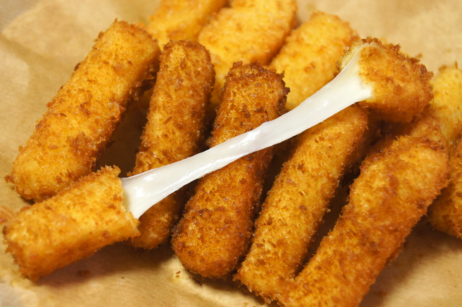
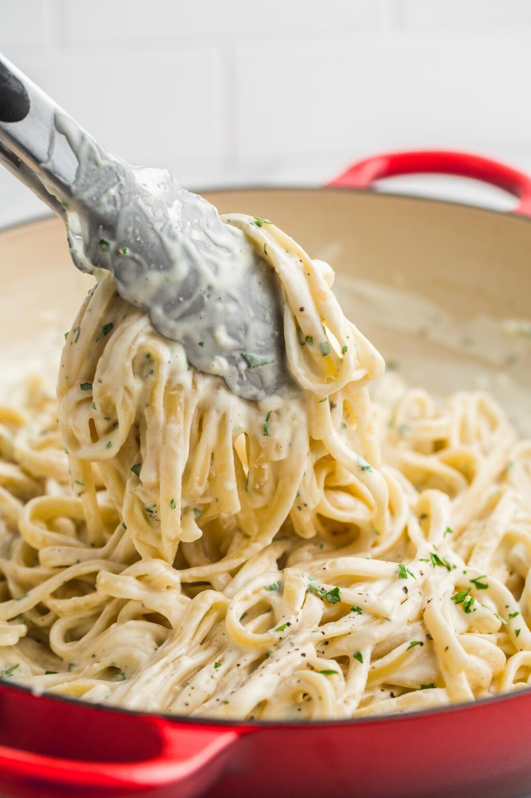
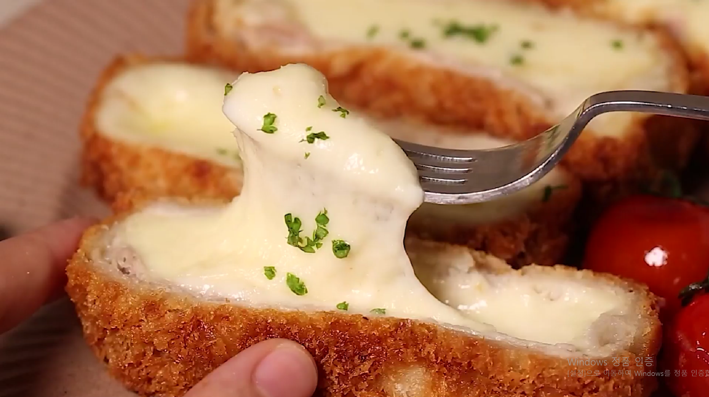

Cheese recipe
치즈스틱

- 재료 준비
- 길죽한 치즈(ex 스트링치즈)
- 빵가루
- 밀가루
- 계란 1~2개
- 1. 치즈를 적당한 크기로 자른다.
- 2. 자른 치즈는 밀가루 > 계란물 > 빵가루 순으로 2번씩 입힌다.(튀김옷이 얇으면 치즈가 뛰어나올수도
있기에 2번씩 입힌다.)
- 3. 170~180℃의 기름에서 타지 않도록 주의하며 튀겨준다.
- 4. 완성.(easy)
돌아가기
치즈 오일 파스타

- 재료 준비(1인분)
- 파스타 면 80g
- 올리브유 3큰술
- 마늘 4쪽
- 베이컨 4장
- 양파 1/4개
- 소금, 후추 약간
- 파마산 치즈 40g
- 계란 노린자
- 1. 파스타를 소금을 조금 넣은 끓는 물에 삶는다.
- 2. 마늘 양파 베이컨을 손질한다.
- 3. 올리브유 두른 팬에 마늘을 볶아 향을 낸다.
- 4. 적당이 향이 나면 양파와 베이컨을 넣어서 볶는다.
- 5. 양파와 베이컨또한 적당이 익으면 면과 치즈를 넣고 섞는다.
- 6. 불을 끄고 계란 노른자를 넣어서 잘 섞은후 담아 낸다.(너무빨리 계란을 넣으면 노른자가 전부 익는다.)
돌아가기
치즈돈까스

- 재료 준비(1~2인분)
- 돼지 등심 한덩어리
- 모짜렐라치즈(블럭) 1/2개
- 빵가루
- 계란 1~2개
- 소금, 후추 약간
- 돈까스소스 필요한만큼
- 1. 등심 지방을 제거하고 2~3cm 간격으로 자르고 자른 등심을 반으로 칼집을 넣어줍니다.
- 2. 펴준 등심을 두들겨 얄보 넓게 펴준다.
- 3. 치즈를 큼지막하게 자른다.
- 4. 넓게 펴준 등심을 앞 뒤로 소금 후추로 밑간을 해준다.
- 5. 큼지막하게 자른 치즈를 등심으로 감싼뒤 랩으로 감싼뒤 냉장고에서 숙성 시킨다.(약 15분)
- 6. 숙성이 끝난 등심에 밀가루, 계란물, 빵가루를 순서대로 옷을 입힌다.
- 7. 160~170℃의 기름에 3분간 노릇하게 골고루 튀겨줍니다
돌아가기